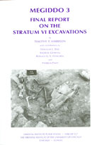

Timothy Harrison with contributions by Douglas l.Esse, Andrew Graham, Ronald G.V. Hancock and Patricia Paice
Megiddo 3: Final Report on the Stratum VI Excavations
Oriental Institute Publications 127. Oriental Institute, University of Chicago: Chicago, 2004
 |
The extensive history of excavations at Megiddo (Tell el-Mutesellim) attests to the site's cultural and historical significance and effectively chronicles the disciplinary development of archaeological research in the region. Virtually every generation has left its mark, and a vast portion of the site has been excavated in the process. This is particularly true of Stratum VI. While this report is primarily concerned with the results of the Oriental Institute excavations, any attempt to reconstruct the stratum, and the cultural and historical information that it contains, must incorporate the results of other projects that have excavated at the site as well. Consequently, this chapter surveys the history of excavations of Stratum VI at Megiddo with the aim of assembling a composite record of those projects that have produced published remains of Stratum VI. The medieval Jewish writer Estori Ha-Parhi is credited with being the first explorer to link ancient Megiddo to the Arab village of Lejjun (Ha-Parhi 1976: 293), located at the entrance to the Wadi Ara, just to the south of the mounded tell (fig. 1). In the mid-nineteenth century, the biblical scholar Edward Robinson, aware that the Sixth Roman Legion had been stationed near Megiddo, and influenced by the etymological link between the Arabic "Lejjun" and the Latin "Legio," reasserted its association with the ancient site (Robinson and Smith 1841/3: 177-80). Remarkably, during a subsequent trip Robinson actually visited Tell el-Mutesellim and was struck by the exceptional view but failed to recognize that he was standing on the ruins of the ancient settlement (Robinson and Smith 1856: 117). Robinson's claim that Megiddo was located at Lejjun was vigorously contested by Claude R. Conder, who argued instead that the remains of the famous town were located at Khirbet Mujedda), a site in the hills overlooking the southeastern comer of the Jezreel Valley (Conder and Kitchener 1882: 64-66,70,90-99). The ensuing debate was resolved about a decade later by the eminent geographer George Adam Smith, who argued convincingly in favor of the ruins preserved at Tell el-Mutesellim (1892: 385-87). |
| Back to Publications | Table of Contents |